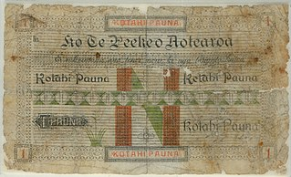

In 1886 the Māori King Tāwhiao established a bank,
Te Peeke o Aotearoa, which was in business until around 1905.
It was set up to provide banking and monetary services to Māori
and was also an expression of Māori autonomy.
This £1 note is held by the Reserve Bank of New Zealand is
one of the few to survive until the present day.